Personal Projects
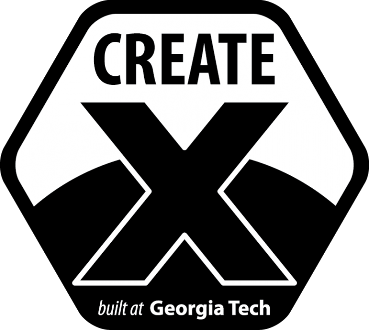 Invitroscan
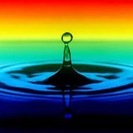 Aquasource
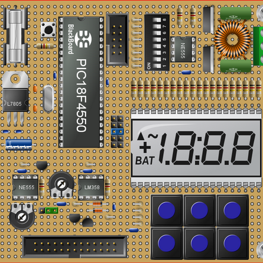 8-Bit Computer
 MATLAB Eye-Tracker
MATLAB Eye-Tracker
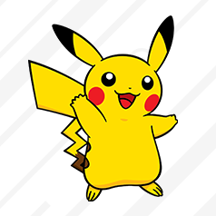 Pokemon Tower Defense
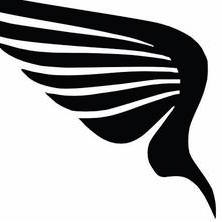 Wingit
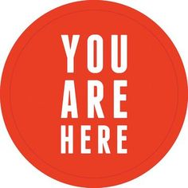 Personal Website


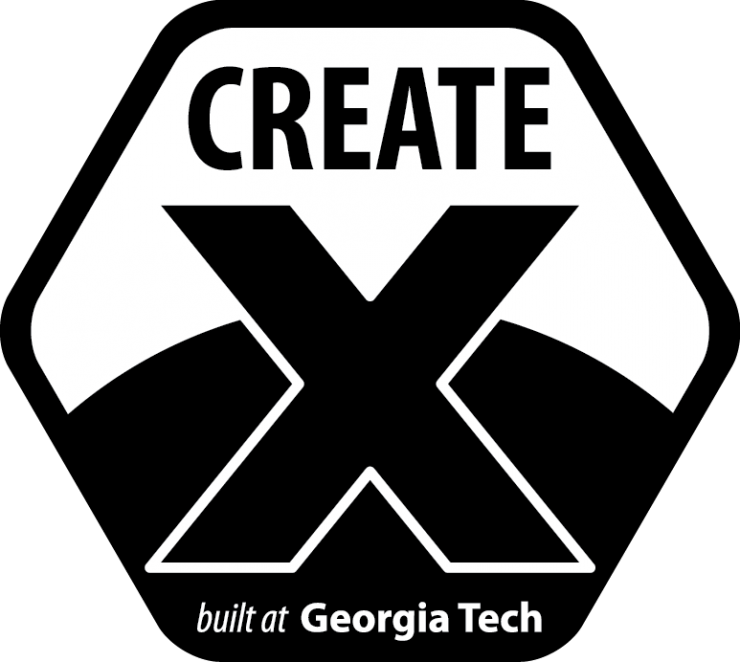 Invitroscan
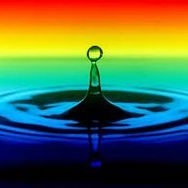 Aquasource
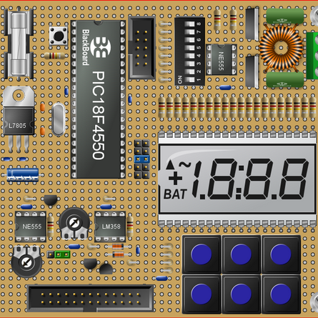 8-Bit Computer
MATLAB Eye-Tracker
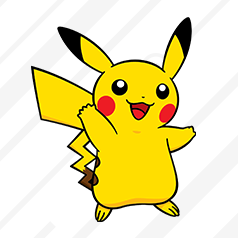 Pokemon Tower Defense
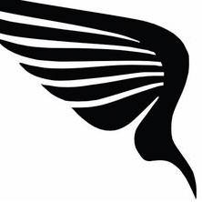 Wingit
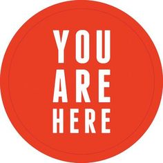 Personal Website
Created July 19, 2017
I started working on this project after my colleague came up with a revolutionary idea to detect bacteria. We have since found an enormous opportunity to diagnose sepsis. I have taken charge of the entrepreneurial side of things: creating all the necessary businness connections, cultivating an elite group of advisors and mentors, and navigating the many challenges along the path to success. We are currently in the development process, with hopes to begin FDA trials within the next couple of years. The video above was taken at Georgia Tech's CREATE-X demo day to cap off our summer-long incubation program.
At HackGSU, our team of five developed a DIY spectrometer and an app that can be used to detect water quality on-the-go. It uses machine learning to analyze spectroscopic patterns and return a result. I developed the front-end iOS application, learning Swift on the fly. Our app won us first place at HackGSU that year, as well as a mapquest prize. See more details of our product here and sourcecode here.
As a personal project following my introduction to computer organization class, I decided to create an 8-bit computer using a digital design tool called logisim. Using only 8 bits introduces considerable design constraints such as limited space for register addressing (with 8-bit instructions, having 8 3-bit-addressible registers is not feasible, and even 4 is a challenge) and limited memory size. You may download logisim and view the file here.
As part of an ambitious choose-your-own extra credit opportunity in one of my classes, I developed a MATLAB program that, in real-time, estimates where you are looking on the screen. Ex: if you look at the top right corner of the screen, the cursor will follow. There are many factors that lead to this being relatively innaccurate, however it works pretty well and I have several ideas to improve its accracy. You may view the source code (and run it yourself with the right MATLAB packages installed) here.
As a continuation of a homework assignment, I developed a tower-defense-style video game with a pokemon theme using JavaFX, where the player selects bushes to produce pokemon to attack trainers and players can purchase new pokemon via the mid-save pokedex menu. You can view the source code and download the playable .jar file here.
For my first hackathon, HackGT, we developed a tool that would let airport booking agents give customers the option to get matched with potential friends or business connections as their seating partner. It uses information gathered from from customers' facebook and linkedin profiles. I developed the algorithm for matching people based on their facebook or linkedin activity. We won the HBK Award of Awesomeness. View the project here.
The website you are viewing was built on HTML/CSS and Javascript, with bootstrap used solely for implementing responsive grids. I otherwised developed all the animation, style, and dynamic functionality on my own in my attempt to learn web development.